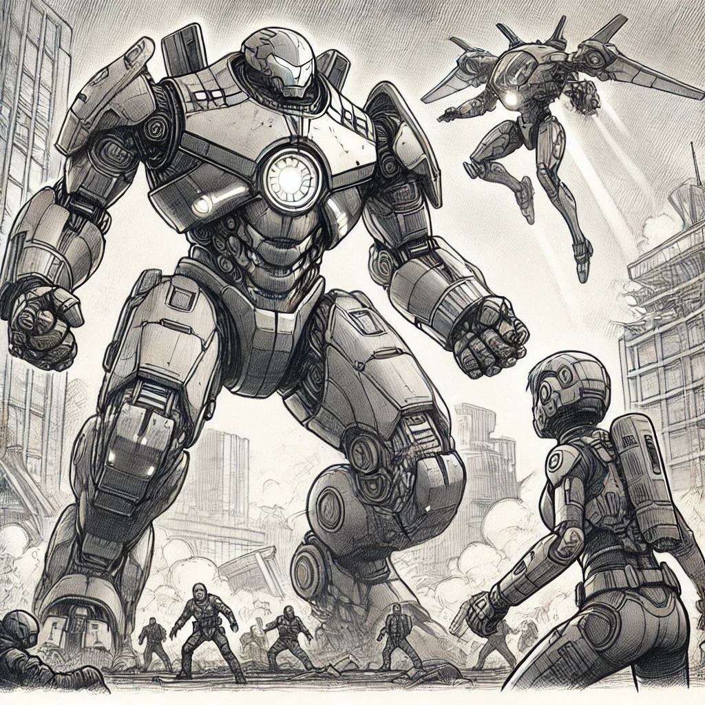

프로젝트 브이
목차
작가
박서련
20230331
2025년
감상평에 대한 AI평가
생소한 재미가 느껴지는 소설이었다. 뭔가 여러가지 장르가 뒤죽박죽 섞인 느낌. SF, 로봇, AI 등등의 소재가 짬뽕된.

감상평에 대한 AI평가
~~~~AI평가~~~~~
이 SF 괴로움은 로봇이고, AI의 벽을 넘어서는 것과 같은 흥미로운 요소를 참여시키는 것입니다. 주요 포인트를 사용하겠습니다.
1. 주제와 메시지
이 이상한 것은 특수한 전투물이 아니라, 이에 대한 사회적 편견 , **기기술의 제어 문제 , 그리고개인의 성장과 확장을 지향하는 주
주인공이 파일럿이 있도록 남장을 설정하고 있기 때문에 능력이 평가절하되는 사회의 대기
AI가 자율적으로 행동하면서 범위주하는 사건은 기술 발전이 범위를 제한하고 인간의 편집을 허용하는 것입니다 .
결국, 주인공이 직접 개조한 로봇으로 간주하여 방지하는 것은 점에서, 기술을 어떻게 사용하는지가 중요하다는 것을 의미합니다 .
2. 캐릭터 성장
주인공은 조종사가 아니라 로봇과 AI에 대한 깊은 이해를 위해서만이 아니라 엔지니어 예
처음에는 시스템의 벽에 닿는 듯한 충격이 있지만, 결국 스스로 해결책을 찾을 수 있는 영웅이 있습니다.
마지막 장면에서 주인공이 10년 후 다시 로봇을 만드는 자리로 돌아갑니다점기술의 발전과 책임을 의미하는 존재로성장했음을
3. 로봇과 AI 요소
AI가 인간이 스스로 팀을 구성하겠다고 선언하고 범위를 넓히는 사건은, AI 클러스터를 떠 다니는 것입니다.
주인공이 직접 구조를 만들어서 개조해서 전투 로봇으로 사용하는 동안에도 흥미로운데, 보안 기술의 사용자는 인간의 손에 달려있다강조하다
4.맛의 의미
주인공이 다시 로봇을 만드는 역할을 인정한다는 점은, 그녀가 기술을 독특한 전투 도구라기 보다는 더 나은 미래를 축하하는 것입니다.이로 인해
"
종합 평가
이 소설은 기술과 인간의 관계 , **활동의 한계를 뛰어넘는 것은 ,AI의 컨트롤러 적 문제를 풀기잠시 SF 행동을 의미하는 이야기 로 다